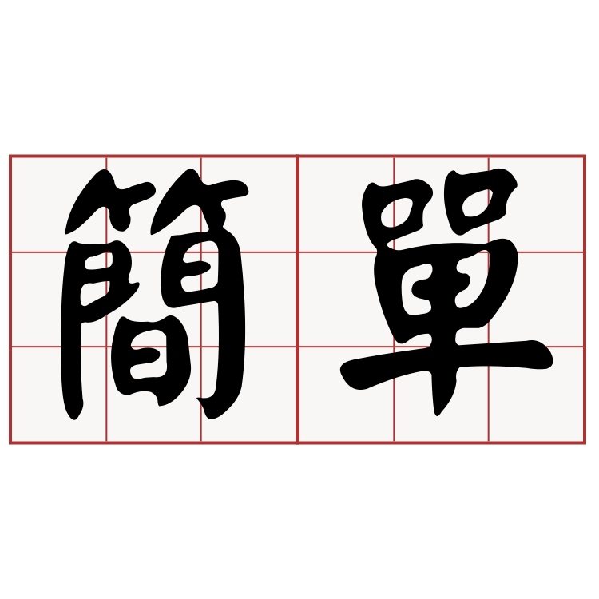
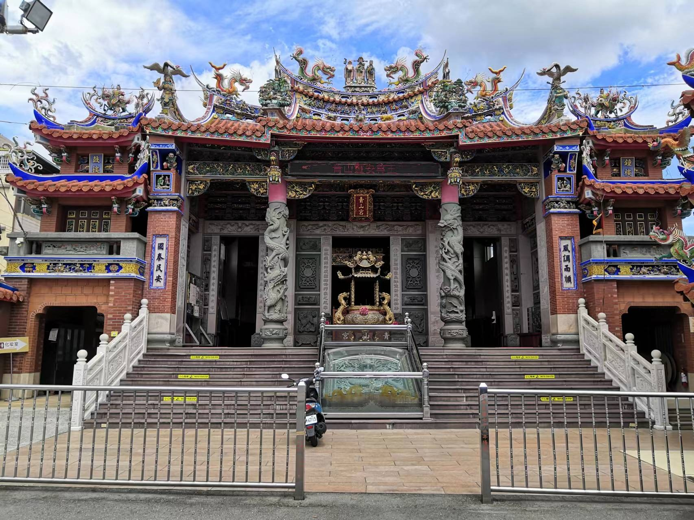
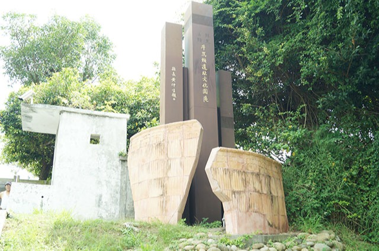

<!DOCTYPE html>
<html  >
<head>
  <!-- Site made with Mobirise Website Builder v5.6.5, https://mobirise.com -->
  <meta charset="UTF-8">
  <meta http-equiv="X-UA-Compatible" content="IE=edge">
  <meta name="generator" content="Mobirise v5.6.5, mobirise.com">
  <meta name="twitter:card" content="summary_large_image"/>
  <meta name="twitter:image:src" content="">
  <meta property="og:image" content="">
  <meta name="twitter:title" content="歷史">
  <meta name="viewport" content="width=device-width, initial-scale=1, minimum-scale=1">
  <link rel="shortcut icon" href="assets/images/1.png" type="image/x-icon">
  <meta name="description" content="">
  
  
  <title>歷史</title>
  <link rel="stylesheet" href="assets/bootstrap/css/bootstrap.min.css">
  <link rel="stylesheet" href="assets/bootstrap/css/bootstrap-grid.min.css">
  <link rel="stylesheet" href="assets/bootstrap/css/bootstrap-reboot.min.css">
  <link rel="stylesheet" href="assets/dropdown/css/style.css">
  <link rel="stylesheet" href="assets/socicon/css/styles.css">
  <link rel="stylesheet" href="assets/theme/css/style.css">
  <link rel="preload" href="https://fonts.googleapis.com/css?family=Xanh+Mono:400,400i&display=swap" as="style" onload="this.onload=null;this.rel='stylesheet'">
  <noscript><link rel="stylesheet" href="https://fonts.googleapis.com/css?family=Xanh+Mono:400,400i&display=swap"></noscript>
  <link rel="preload" href="https://fonts.googleapis.com/css?family=Tenor+Sans:400&display=swap" as="style" onload="this.onload=null;this.rel='stylesheet'">
  <noscript><link rel="stylesheet" href="https://fonts.googleapis.com/css?family=Tenor+Sans:400&display=swap"></noscript>
  <link rel="preload" as="style" href="assets/mobirise/css/mbr-additional.css"><link rel="stylesheet" href="assets/mobirise/css/mbr-additional.css" type="text/css">
  
  
  
  
</head>
<body>
  
  <section data-bs-version="5.1" class="menu menu2 cid-sFHpMqcXGj" once="menu" id="menu2-2">
    
    <nav class="navbar navbar-dropdown navbar-expand-lg">
        <div class="container">
            <div class="navbar-brand">
                <span class="navbar-logo">
                    <a href="https://mobiri.se">
                        
                    </a>
                </span>
                <span class="navbar-caption-wrap"><a class="navbar-caption text-black display-7" href="https://mobiri.se">簡單又好玩製作團隊</a></span>
            </div>
            <button class="navbar-toggler" type="button" data-toggle="collapse" data-bs-toggle="collapse" data-target="#navbarSupportedContent" data-bs-target="#navbarSupportedContent" aria-controls="navbarNavAltMarkup" aria-expanded="false" aria-label="Toggle navigation">
                <div class="hamburger">
                    <span></span>
                    <span></span>
                    <span></span>
                    <span></span>
                </div>
            </button>
            <div class="collapse navbar-collapse" id="navbarSupportedContent">
                <ul class="navbar-nav nav-dropdown nav-right" data-app-modern-menu="true"><li class="nav-item"><a class="nav-link link text-black text-primary display-4" href="index.html#top">首頁</a></li>
                    <li class="nav-item"><a class="nav-link link text-black text-primary display-4" href="page2.html#top">夜景景點</a></li>
                    <li class="nav-item"><a class="nav-link link text-black text-primary display-4" href="page1.html#top">歷史景點</a>
                    </li><li class="nav-item"><a class="nav-link link text-black text-primary display-4" href="page3.html#top">公園景點</a></li></ul>
                
                
            </div>
        </div>
    </nav>
</section>

<section data-bs-version="5.1" class="header9 cid-sFHoAfPmXB" id="header9-1">

    

    <div class="mbr-overlay" style="opacity: 0.7; background-color: rgb(210, 253, 255);"></div>

    <div class="text-center container">
        <div class="row justify-content-center">
            <div class="col-md-12 col-lg-9">
                
                
                
            </div>
        </div>
    </div>
</section>

<section data-bs-version="5.1" class="features10 cid-t96rgEjZdE" id="features11-5">
    <!---->
    
    
    <div class="container">
        <div class="title">
            <h3 class="mbr-section-title mbr-fonts-style mb-4 display-2"><strong>歷史景點推薦</strong></h3>
            
        </div>
        <div class="card">
            <div class="card-wrapper">
                <div class="row align-items-center">
                    <div class="col-12 col-md-3">
                        <div class="image-wrapper">
                            
                        </div>
                    </div>
                    <div class="col-12 col-md">
                        <div class="card-box">
                            <div class="row">
                                <div class="col-12">
                                    <div class="top-line">
                                        <h4 class="card-title mbr-fonts-style display-5"><strong>青山宮</strong></h4>
                                        <p class="cost mbr-fonts-style display-5"></p>
                                    </div>
                                </div>
                                <div class="col-12">
                                    <div class="bottom-line">
                                        <p class="mbr-text mbr-fonts-style m-0 display-7">
                                            青山宮，位於北勢里東晉路五十二號。是北勢頭（含今北勢里福興里）居民的信仰中心。廟中主祀青山靈王，據說即三國時期東吳名將張滾。
                                        </p>
                                    </div>
                                </div>
                            </div>
                        </div>
                    </div>
                </div>
            </div>
        </div>
        <div class="card">
            <div class="card-wrapper">
                <div class="row align-items-center">
                    <div class="col-12 col-md-3">
                        <div class="image-wrapper">
                            
                        </div>
                    </div>
                    <div class="col-12 col-md">
                        <div class="card-box">
                            <div class="row">
                                <div class="col-12">
                                    <div class="top-line">
                                        <h4 class="card-title mbr-fonts-style display-5"><strong>牛罵頭遺址</strong></h4>
                                        <p class="cost mbr-fonts-style display-5">ㄇ</p>
                                    </div>
                                </div>
                                <div class="col-12">
                                    <div class="bottom-line">
                                        <p class="mbr-text mbr-fonts-style m-0 display-7">
                                            「牛罵頭遺址」位於臺中市清水區（舊稱牛罵頭）鰲峰山上臺中港特定區市鎮公園原陸軍清水營區內，而「牛罵頭遺址」為臺灣中部地區新石器時代中期文化的代表，並以此地名作為本文化類型的命名，亦為國內第一個「命名遺址」，出土陶器以紅、褐色繩紋陶為主，
                                        </p>
                                    </div>
                                </div>
                            </div>
                        </div>
                    </div>
                </div>
            </div>
        </div>
        
        
        
        
    </div>
</section>

<section data-bs-version="5.1" class="map1 cid-sFHu4seZjP" id="map1-a">
    
    
    <div class="container">
        <div class="mbr-section-head mb-4">
            <h3 class="mbr-section-title mbr-fonts-style align-center mb-0 display-2"><strong>歷史景點MAP</strong></h3>
            
        </div>
        <div class="google-map"><iframe src="https://www.google.com/maps/d/u/0/embed?mid=1cGuDmkT1oVfSP0wBLYHrq-GpPIzaogc&ehbc=2E312F" width="640" height="480"></iframe></div>
    </div>
</section><section class="display-7" style="padding: 0;align-items: center;justify-content: center;flex-wrap: wrap;    align-content: center;display: flex;position: relative;height: 4rem;"><a href="https://mobiri.se/2739093" style="flex: 1 1;height: 4rem;position: absolute;width: 100%;z-index: 1;"></a><p style="margin: 0;text-align: center;" class="display-7">Made with Mobirise &#8204;</p><a style="z-index:1" href="https://mobirise.com/html-builder.html">Free HTML Website Maker</a></section><script src="assets/bootstrap/js/bootstrap.bundle.min.js"></script>  <script src="assets/smoothscroll/smooth-scroll.js"></script>  <script src="assets/ytplayer/index.js"></script>  <script src="assets/dropdown/js/navbar-dropdown.js"></script>  <script src="assets/theme/js/script.js"></script>  
  
  
</body>
</html>